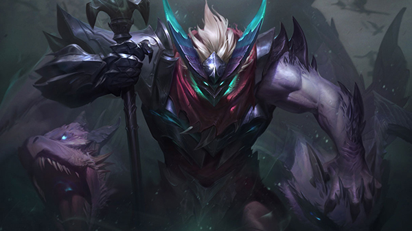
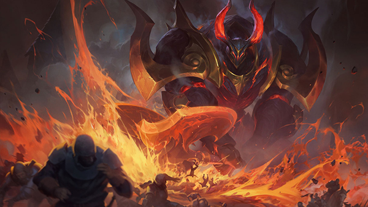
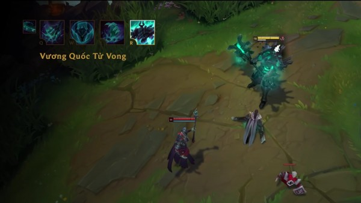

Làm thế nào để khắc chế chiêu cuối của Mordekaiser?
Cũng không hại não như bạn tưởng đâu :v
 Cơ Chế Hoạt Động |
Cơ Chế Hoạt Động |
 July 19, 2019 |
July 19, 2019 |
 Trung Anh Nguyen
Trung Anh Nguyen
Thanh niên cục súc này đã quay trở lại một cách đầy mạnh mẽ trong bản 9.12. Trước đó, đây chỉ là một tướng làng nhàng, thất bại và đầy lỗi của Rito. Mordekaiser chỉ trở nên hữu dụng khi gặp các kèo ngon hoặc rơi vào tay người có kinh nghiệm sử dụng. Đây là còn chưa kể tới lượng lỗi game do thanh niên này gây ra. Nhưng đợt làm lại trong bản 9.12 đã đem Mordekaiser trở lại thời kỳ hoàng kim thật sự và còn vượt trội hơn cả năm 2015, cái thời mà vị tướng này liên tục bị cấm vì độ bá đạo tới mức khủng khiếp của nó.
Giờ đây, với bộ kỹ năng mới, Mordekaiser có đủ mọi thứ mình cần. Độ cục súc? Thừa. Hiệu ứng khống chế? Cực kỳ nhiều và còn ở một trình độ khác khi mà bạn có thể nhốt đối thủ trong một không gian khác cùng mình trong vòng 7 giây, gấp đôi thời gian “hóa vàng” nhờ ĐHC. Sát thương? Khủng khiếp! Quả thực là rất khủng khiếp. Chỉ cần độ 1 món là thanh niên này có thể thoải mái cân đôi rồi.
Khả năng tạo giáp từ (W) cũng giúp hắn trâu bò hơn trong giao tranh tổng và có thể nhào tới bắt mục tiêu quan trọng. Cuối cùng và cũng quan trọng nhất, đó chính là việc Mordekaiser không hề sợ bị gank khi có chiêu cuối. Nhốt kẻ địch vào solo 1 vs 1 rồi chạy thì thằng nào làm gì được. Có khi solo thắng xong lại ra đập nốt đứa còn lại..
Vậy phải xử lý Vương Quốc Tử Vong (R) của Mordekaiser ra sao? Trước hết chúng ta hãy cùng tìm hiểu cơ chế của nó đã. Mordekaiser vốn đã là một vị tướng SMPT có thể “gank tem”cực mạnh với bộ kỹ năng bình thường của mình. Nhưng khi kết hợp với chiêu cuối, nó lại có phần hơi “quá đà” khi mà Mordekaiser có thể khóa một tướng địch trong môi trường khác rồi giết hắn để lấy được thêm chỉ số của nạn nhân.
Để khắc chế chiêu cuối của Mordekaiser, bạn sẽ có thể cân nhắc các lựa chọn sau. Đầu tiên, hãy chơi tướng cơ động và có khả năng bay nhảy. Để kích hoạt chiêu cuối, Mordekaiser sẽ tốn 0.5 giây thời gian niệm. Mặc dù trong lúc đó nạn nhân bị làm chậm 75% nhưng vẫn có thể sử dụng các kỹ năng.Nếu lúc này bạn tung hiệu ứng khống chế cứng như làm choáng, hất tung, hoảng sợ,…vào người Mordekaiser thì chiêu cuối của hắn sẽ bị ngắt. Hoặc dùng kỹ năng chạy trốn lao ra ngoài tầm là bạn cũng có thể chạy trốn.
Cách thứ hai, đó chính là mua Khăn Giải Thuật, đây là trong trường hợp bạn không chơi tướng cơ động và cũng chẳng có khả năng cân Mordekaiser khi solo 1vs1. Nhưng thứ này sẽ khiến bạn tốn tiền hoặc thiếu sát thương trầm trọng. Tất nhiên, trong trường hợp đánh xạ thủ thì có Khăn Giải Thuật cũng không phải là một lựa chọn tồi. Ngoài ra các tướng có kỹ năng giải hiệu ứng như Alistar hay Gangplank hoặc Rengar cũng có thể thoát khỏi (R) của Mordekaiser nếu sử dụng chúng.
Trong trường hợp bạn không phải là nạn nhân bị nhốt cùng Mordekaiser, hãy chú ý đến hai đốm sáng xuất hiện ở trên bản đồ. Nó sẽ hiển thị chuyển động của nạn nhân và Mordekaiser (của nạn nhân sẽ là màu xanh còn Mordekaiser sẽ là màu đỏ). Do đó hãy chú ý vị trí của chúng để xử lý một cách thích hợp. Ví dụ như “hấp diêm” Mordekaiser, cứu viện đồng đội sau khi hắn hiện ra hoặc đơn giản là tránh trường hợp trở thành mồi ngon khi lỡ đứng cạnh Mordekaiser khi chiêu cuối của hắn kết thúc

Có gì ném đá hay góp ý thì anh em hãy bình luận ở phía dưới nhé. Ngoài ra đừng quên ghé Liên Minh 360 mỗi ngày để cập nhật tin tức mới và bổ ích nhất liên quan tới LMHT!